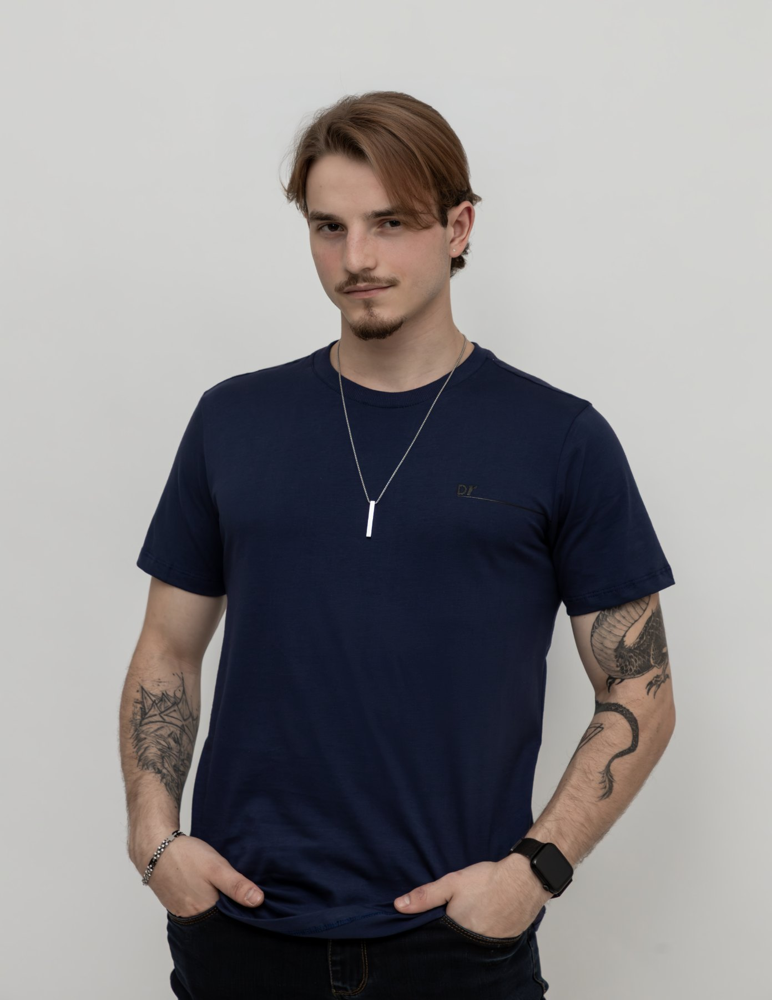
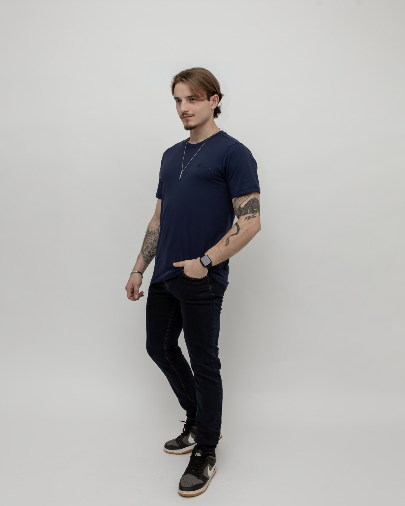
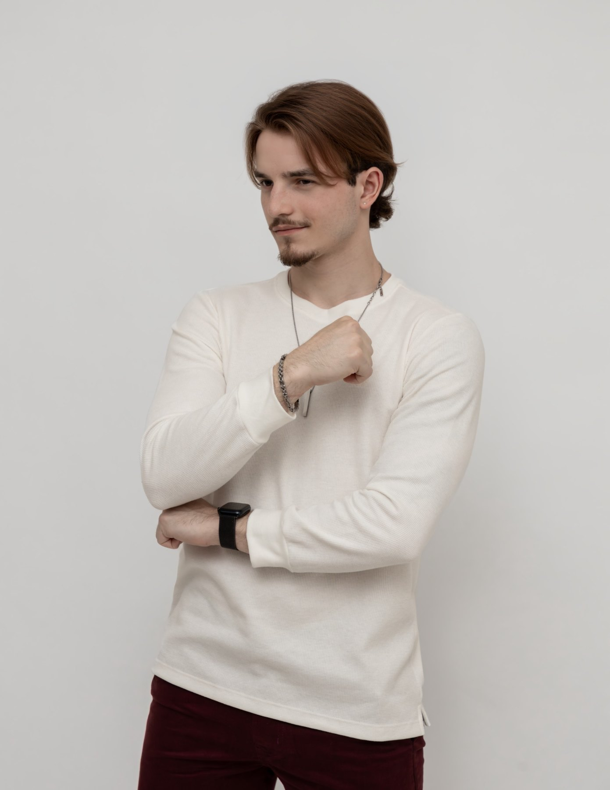

01 / DESIGN SYSTEM · SETEMBRO 2026
PRESENÇA.
Em todas as versões.
Uma direção editorial escura, tipografia condensada e fotografias apresentadas por inteiro. O contraste vem da escala tipográfica e da cor cobre, mantendo uma cadência consistente entre as imagens.
O retrato conduz.
Imagem antes do efeito
A foto de terno abre o site. As doze imagens do acervo recebem a mesma área de exibição, sem blocos gigantes intercalados com miniaturas. O lightbox amplia a fotografia completa.
Preto, pedra e cobre
A base quase preta sustenta as fotografias. O cobre identifica pequenos pontos de ação e ganha presença no encerramento. A cor não altera a pele nem os tecidos das imagens.
Movimento concentrado
Um conjunto de três fotografias em perspectiva cria o momento espacial. A leitura normal não depende de efeitos nem de uma introdução. O visitante pode pausar ou avançar a composição.
Uma base. Um acento.
Ink
#111210
Fundo principal
Panel
#1B1D19
Seção em movimento
Paper
#EEECE7
Texto principal
Muted
#AAA9A2
Texto secundário
Copper
#DF7354
Acento e contato
| Par | Aplicação | Contraste calculado |
|---|
DISPLAY / NIMBUS SANS NARROW BOLD
IGOR DE CASTRO.
Títulos e nome. Condensada, peso 700, tracking entre −0.035em e −0.015em. A escala é fluida e responde ao viewport.
EDITORIAL / P052 ITALIC
Outros ângulos.
Contraponto em frases breves. Não usar em parágrafos extensos, botões ou informações comerciais.
TEXTO / NIMBUS SANS REGULAR
Editorial. Streetwear. Retrato.
Texto principal de 16 a 18 px; navegação e filtros de 14 px; metadados de 12 a 13 px. As fontes são locais e suas licenças estão incluídas no projeto.
Espaço para ver.



Área de galeria 3:4 com object-fit: contain. O espaço residual acomoda a proporção original. Sem filtros uniformes, zoom que corte o corpo, manipulação de rosto ou títulos sobre o modelo. A numeração é fixa e permanece igual durante a filtragem.
A imagem sem camisa e o PDF que a contém não fazem parte deste pacote. Legendas foram corrigidas pela inspeção das imagens: a IMG_2785 mostra boné, sem óculos.
Elementos essenciais.
| Componente | Comportamento | Teclado / toque |
|---|---|---|
| Fotografia | Iluminação discreta no hover; abre lightbox | Botão nativo, Enter/Espaço, foco visível |
| Filtros | Todos, Estúdio e Externa; sem reorganização por tamanho | aria-pressed e botões nativos |
| Menu | Dialog em tela inteira até 900 px | Foco contido pelo dialog, Escape, retorno ao botão |
| Lightbox | Imagem inteira, contador e anterior/próxima | Escape, setas, gesto horizontal e controles de toque |
| Contato | Links externos reais, e-mail e WhatsApp | Rótulos claros e foco visível |
Foco: contorno cobre de 2 px com 6 px de afastamento. No encerramento cobre, usar contorno escuro. A seleção de filtro combina cor e linha inferior. Não depender de cor para comunicar seleção.
Recompor, não encolher.
| Layout | Desktop · 1440 | Tablet · 834 | Mobile · 390 |
|---|---|---|---|
| Abertura | Texto e fotografia em duas colunas | Duas colunas com tipos ajustados | Nome, contexto e fotografia em sequência |
| Galeria | Três colunas iguais | Duas colunas iguais | Uma imagem grande por linha |
| Contato | Chamada e retrato separados | Chamada e retrato; contatos em duas colunas | Chamada, retrato e links empilhados |
| Espaçamento | 104 px entre seções; 24 px entre fotos | 80 px / 22 px | 62 px / 32 px entre linhas |
Largura máxima de conteúdo: 1760 px. Margens fluidas de 22 a 80 px. Breakpoints usados: 1100, 900 e 600 px. As pranchas usam o próprio código do site e não versões redesenhadas manualmente.
Profundidade com propósito.
| Elemento | Intenção / gatilho | Execução | Alternativa |
|---|---|---|---|
| Fotografias 3D | Mostrar três looks em diferentes planos; ao entrar na tela | CSS perspective 1600 px, translate3d, rotateY e rotateZ. Troca a cada 4,4 s; transição de 850 ms | Pausado em prefers-reduced-motion; avanço manual sempre disponível |
| Ponteiro na cena | Pequena mudança de observação | Rotação máxima ±4,5° horizontal e ±2,5° vertical | Sem resposta ao ponteiro no toque e no movimento reduzido |
| Galeria | Indicar que a imagem pode ser ampliada | Leve brilho e ícone em 200–300 ms; sem zoom | Ícone permanente no toque |
| Vinheta Remotion | Extensão audiovisual para apresentação / Reels | Composição fonte de 9 s incluída em motion/ | Fonte entregue; vídeo não renderizado e não carregado pelo site |
A cena 3D é funcional e usa transformação espacial nativa do navegador; não depende de Three.js ou WebGL. A composição Remotion é uma entrega separada, com instruções próprias. Pausar o movimento interrompe a troca automática; a cena também pausa fora da tela, em aba oculta e durante a visualização ampliada.
As correções.
| Pedido | Resultado |
|---|---|
| Primeira foto de terno | Abertura: IMG_3555.jpg |
| Foto 01 deveria ser a 10 | 01: IMG_3932.jpg. A IMG_2785 foi para 10 |
| Foto 07 deveria ser a 11 | 07: c71f15af.jpg. A IMG_3928 foi para 11 |
| IMG_2772 no contato (print 1) | Arquivo ausente no ZIP original. Retrato IMG_3927 provisório; substituição centralizada em photos.js |
A interpretação de “01 por 10” e “07 por 11” usa a numeração do array de fotografias do projeto original. As posições foram trocadas para manter todas as imagens sem duplicação na galeria.